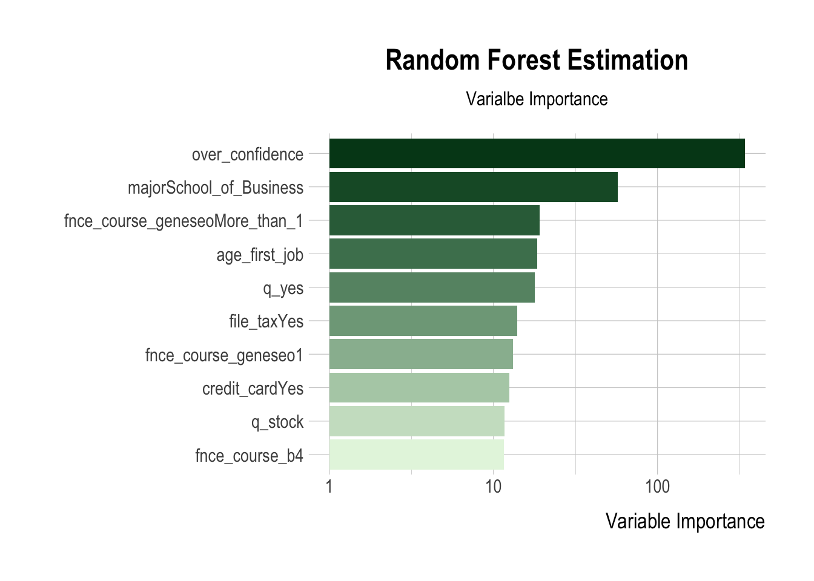

df <- read_csv("survey-raw.csv")
var_desc <- colnames(df)
colnames(df) <- c("time_stamp",
"email",
"score",
"grad_yr",
"county",
"year_geneseo",
"transfer",
"major",
"minor",
"prof_program",
"graduate_degree",
"self_eval",
"age_first_job",
"file_tax",
"college_fund",
"parent_job",
"credit_card",
"age_credit_card",
"pay_rent",
"own_house",
"car_payment",
"brokerage_acct",
"fnce_course_b4",
"fnce_course_geneseo",
"q1_inflation",
"q2_mortgage_int",
"q3_401k",
"q4_risk_return",
"q5_comp_int",
"q6_apr",
"q7_trap",
"gold")
major_cat <- read_csv('major_category.csv')
minor_cat <- read_csv('minor_category.csv')
major_1_cat <- major_cat |>
select(ends_with('1')) |>
distinct() |>
rename(dept_major_1 = dept_1)
major_2_cat <- major_cat |>
select(ends_with('2')) |>
distinct() |>
rename(dept_major_2 = dept_2)
minor_1_cat <- minor_cat |>
select(ends_with('1')) |>
distinct() |>
rename(dept_minor_1 = dept_1)
minor_2_cat <- minor_cat |>
select(ends_with('2')) |>
distinct() |>
rename(dept_minor_2 = dept_2)
df_clean <- df |>
filter(is.na(q7_trap) | q7_trap == "To prepare for unexpected expenses") |>
mutate(score = as.integer(str_sub(score, 1, 1))) |>
mutate(year_geneseo = case_when(str_detect(year_geneseo, "First") ~ "First",
str_detect(year_geneseo, "Second") ~ "Second",
str_detect(year_geneseo, "Third") ~ "Third",
str_detect(year_geneseo, "Fourth") ~ "Fourth",
str_detect(year_geneseo, "Grad") ~ "Grad",
str_detect(year_geneseo, "Prefer") ~ NA,
)) |>
mutate(age_first_job_raw = age_first_job, .after = age_first_job) |>
mutate(age_first_job = case_when(str_detect(age_first_job, "15") ~ "15",
str_detect(age_first_job, "16") ~ "16",
str_detect(age_first_job, "17") ~ "17",
str_detect(age_first_job, "18") ~ "18",
str_detect(age_first_job, "19") ~ "19",
str_detect(age_first_job, "20") ~ "20",
str_detect(age_first_job, "Prefer") ~ NA,
)
) |>
mutate(file_tax = case_when(str_detect(file_tax, "Done") ~ "Yes",
str_detect(file_tax, "I did not") ~ "No",
str_detect(file_tax, "My parents") ~ "Parents",
str_detect(file_tax, "My accountant") ~ "Parents",
str_detect(file_tax, "My family") ~ "Parents",
str_detect(file_tax, "Yes") ~ "Yes",
str_detect(file_tax, "No") ~ "No",
str_detect(file_tax, "Prefer") ~ NA,
)) |>
select(-(time_stamp:email)) |>
select(-q7_trap) |>
mutate(id_respondent = row_number(), .before = 1) |>
mutate(year_geneseo = ifelse(!is.na(graduate_degree),
"Grad", year_geneseo) ) |>
mutate(year_upper_lower = ifelse(year_geneseo == 'First' |
year_geneseo == 'Second',
'Underclassmen',
ifelse(year_geneseo == "Grad",
'Graduates', 'Upperclassmen')),
.after = year_geneseo
) |>
# Alexis
mutate(credit_card = case_when(str_detect(credit_card, "I use my parent's credit card") ~ "Parents",
str_detect(credit_card, "Yes") ~ "Yes",
str_detect(credit_card, "No") ~ "No",
str_detect(credit_card, "Prefer") ~ NA,
)) |>
mutate(age_credit_card = case_when(str_detect(age_credit_card, "Before age 18") ~ "b_18",
str_detect(age_credit_card, "At or after age 18") ~ "a_18",
str_detect(age_credit_card, "
I never owned a credit card") ~ "Never",
str_detect(age_credit_card, "Prefer") ~ NA
)) |>
mutate(pay_rent = case_when(str_detect(pay_rent, "Live on campus") ~ "On_Campus",
str_detect(pay_rent, "Yes") ~ "Yes",
str_detect(pay_rent, "No") ~ "No",
str_detect(pay_rent, "Prefer") ~ NA,
))|>
mutate(own_house = case_when(str_detect(own_house, "Yes") ~ "Yes",
str_detect(own_house, "No") ~ "No",
str_detect(own_house, "Prefer") ~ NA,
))|>
mutate(car_payment = case_when(str_detect(car_payment, "Yes") ~ "Yes",
str_detect(car_payment, "No") ~ "No",
str_detect(car_payment, "Prefer") ~ NA,
)) |>
mutate(score_pf = ifelse(score >= 4, 1, 0), .after = score) |>
relocate(self_eval, .after = score_pf) |>
mutate(score_scaled = scale(score), .after = score_pf) |>
mutate(self_eval_scaled = scale(self_eval), .after = self_eval) |>
mutate(over_confidence = self_eval_scaled - score_scaled, .after = score_pf) |>
mutate(MSA = case_when( # https://dol.ny.gov/new-york-state-geography
str_detect(county, paste(c("Albany", "Rensselaer", "Saratoga", "Schenectady", "Schoharie"), collapse = '|') ) ~ "Albany-Schenectady-Troy",
str_detect(county, paste(c("Broome", "Tioga"), collapse = '|') ) ~ "Binghamton",
str_detect(county, paste(c("Erie", "Niagara"), collapse = '|') ) ~ "Buffalo-Niagara Falls",
str_detect(county, paste(c("Chemung"), collapse = '|') ) ~ "Elmira",
str_detect(county, paste(c("Warren", "Washington"), collapse = '|') ) ~ "Glens Falls",
str_detect(county, paste(c("Tompkins"), collapse = '|') ) ~ "Ithaca",
str_detect(county, paste(c("Kingston"), collapse = '|') ) ~ "Ulster",
str_detect(county, paste(c("Bronx", "Kings", "New York", "Queens", "Richmond"), collapse = '|') ) ~ "New York City Metropolitan Area",
str_detect(county, paste(c("Orange", "Rockland", "Westchester"), collapse = '|') ) ~ "Orange-Rockland-Westchester",
str_detect(county, paste(c("Livingston", "Monroe", "Ontario", "Orleans", "Wayne", "Yates"), collapse = '|') ) ~ "Rochester",
str_detect(county, paste(c("Madison", "Onondaga", "Oswego"), collapse = '|') ) ~ "Syracuse",
str_detect(county, paste(c("Herkimer", "Oneida"), collapse = '|') ) ~ "Utica-Rome",
str_detect(county, paste(c("Jefferson"), collapse = '|') ) ~ "Watertown-Fort Drum",
str_detect(county, paste(c("Dutchess", "Putnam"), collapse = '|') ) ~ "Dutchess-Putnam",
str_detect(county, paste(c("Nassau", "Suffolk"), collapse = '|') ) ~ "Nassau-Suffolk",
str_detect(county, paste(c("high school"), collapse = '|') ) ~ "Outside NY",
str_detect(county, paste(c("Allegany", "Cattaraugus", "Cayuga", "Chautauqua",
"Chenango", "Clinton", "Columbia", "Cortland",
"Delaware", "Essex", "Franklin", "Fulton",
"Genesee", "Greene", "Hamilton", "Lewis",
"Montgomery", "Otsego", "Saint Lawrence", "Schuyler",
"Seneca", "Steuben", "Sullivan", "Wyoming"), collapse = '|') ) ~ "Non-MSA",
), .after = county
) |>
mutate(college_fund = case_when(
college_fund == "No" ~ "No",
college_fund == "Parents Pay for college tuition" ~ "Yes",
college_fund == "Prefer to not respond" ~ "Prefer to not respond",
college_fund == "They set up a savings account with my own money" ~ "Yes",
college_fund == "Yes" ~ "Yes",
college_fund == "Yes, but got used for a car instead" ~ "Yes",
college_fund == "military/educational benefits" ~ "Yes",
college_fund == "not sure" ~ "Prefer to not respond"
)) |>
mutate(prof_program_TF = ifelse(is.na(prof_program),
0, 1), .after = prof_program) |>
mutate(parent_job_TF = case_when(
parent_job == "Accounting" ~ 1,
parent_job == "Insurance" ~ 1,
parent_job == "No" ~ 0,
parent_job == "One parent used to work for a bank for 17+ years" ~ 1,
parent_job == "Prefer to not respond" ~ NA,
parent_job == "Yes" ~ 0,
parent_job == "healthcare and Law" ~ 0,
parent_job == "mom is partly involved in real estate" ~ 1,
parent_job == "mom used to" ~ 1,
parent_job == "my dad is a mortgage broker" ~ 1,
), .after = parent_job) |>
mutate(age_18_card = ifelse(age_credit_card == 'a_18',
1,
ifelse(age_credit_card == 'b_18',
0, NA)),
.after = age_credit_card) |>
mutate(own_house = ifelse(own_house == "No", 0, 1)) |>
mutate(car_payment = ifelse(car_payment == 'No',
0,
ifelse(car_payment == 'Yes',
1, NA)),
fnce_course_b4 = ifelse(fnce_course_b4 == 'No',
0,
ifelse(fnce_course_b4 == 'Yes',
1, NA)),
fnce_course_geneseo = ifelse(fnce_course_geneseo == 'No',
"0",
ifelse(fnce_course_geneseo == 'Yes, only one course',
"1",
ifelse(fnce_course_geneseo == 'Yes, more than one course', "More_than_1", NA))),
) |>
mutate(brokerage_acct = ifelse(brokerage_acct == "I am using a financial advisor to invest my savings, unsure of the status of that", "No", brokerage_acct),
brokerage_acct = ifelse(str_detect(brokerage_acct, "I never set any of this up"), "No", brokerage_acct),
brokerage_acct = ifelse(str_detect(brokerage_acct, "Teacher's Retirement"), "No", brokerage_acct),
brokerage_acct = ifelse(str_detect(brokerage_acct, "No, however am currently in process of doing so"), "No", brokerage_acct),
q_IRA = ifelse(str_detect(brokerage_acct, "IRA"), 1, 0),
q_stock = ifelse(str_detect(brokerage_acct, "stock"), 1, 0),
q_CDs = ifelse(str_detect(brokerage_acct, "CDs"), 1, 0),
q_brockerage = ifelse(str_detect(brokerage_acct, "brockerage"), 1, 0),
q_bonds = ifelse(str_detect(brokerage_acct, "bonds"), 1, 0),
q_options = ifelse(str_detect(brokerage_acct, "options"), 1, 0),
q_crypto = ifelse(str_detect(brokerage_acct, "crypto"), 1, 0),
q_yes = ifelse(brokerage_acct == "No", 0,
ifelse(brokerage_acct == "Prefer to not respond", NA, 1)),
.before = brokerage_acct
) |>
separate(major, into = c('major_1', 'major_2'),
sep = ', ') |>
separate(minor, into = c('minor_1', 'minor_2'),
sep = ', ') |>
relocate(grad_yr, .before = year_geneseo) |>
relocate(major_1, major_2, .after = year_upper_lower) |>
relocate(minor_1, minor_2, .after = major_2)
df_clean <- df_clean |>
left_join(major_1_cat) |>
left_join(major_2_cat) |>
left_join(minor_1_cat) |>
left_join(minor_2_cat |> filter(!is.na(minor_2))) |>
mutate(minor_2 = ifelse(minor_1 == "anthropology and biology",
"Biology", minor_2),
minor_2 = ifelse(minor_1 == "sustainability studies and biology",
"Biology", minor_2)
) |>
relocate(dept_major_1, .after = major_1) |>
relocate(dept_major_2, .after = major_2) |>
relocate(dept_minor_1, .after = minor_1) |>
relocate(dept_minor_2, .after = minor_2) |>
mutate(transfer = ifelse(transfer == "Yes", 1, 0)) |>
select(-age_first_job_raw, -parent_job, -age_credit_card,
-brokerage_acct) |>
mutate(q1_inflation = ifelse(q1_inflation == "The same amount as today", 1, 0),
q2_mortgage_int = ifelse(q2_mortgage_int == "TRUE", 1, 0),
q3_401k = ifelse(str_detect(q3_401k, "Either before"), 1, 0),
q4_risk_return = ifelse(q4_risk_return == "TRUE", 1, 0),
q5_comp_int = ifelse(q5_comp_int == "More than $102", 1, 0),
q6_apr = ifelse(str_detect(q6_apr, "It is calculated by multiplying"), 1, 0),
age_first_job = as.integer(age_first_job),
college_fund = ifelse(college_fund == "Yes", 1,
ifelse(college_fund == "No", 0 , NA)),
age_18_card = ifelse(is.na(age_18_card), 0 , age_18_card)
) |>
mutate(major = "", .after = year_upper_lower) |>
mutate(
major = ifelse(dept_major_1 == "Education" | dept_major_2 == "Education",
"Education", major),
major = ifelse(dept_major_1 == "School of Business" | dept_major_2 == "School of Business", "School of Business", major)
) |>
filter(grad_yr != "Received a GED") |>
mutate(major = ifelse( dept_major_1 %in% c("Biology",
"Mathematics",
"Geology",
"Chemistry",
"Neuroscience",
"Geography",
"Physics",
"Geography and Sustainability Studies"),
"STEM", major),
major = ifelse( dept_major_2 %in% c("Biology",
"Mathematics",
"Geology",
"Chemistry",
"Neuroscience",
"Geography",
"Physics",
"Geography and Sustainability Studies"),
"STEM", major))
df_clean <- df_clean |>
mutate(major = ifelse(is.na(major) & dept_major_1 == "Education", "Education", major),
major = ifelse(is.na(major) & dept_major_2 == "Education", "Education", major),)
df_clean <- df_clean |>
mutate(major = ifelse(is.na(major), "Non-STEM", major),
major = ifelse(major == "", "Non-STEM", major)
)
major_1_count <- df_clean |>
count(dept_major_1) |>
arrange(-n)
major_2_count <- df_clean |>
count(dept_major_2) |>
arrange(-n)Determinants of Financial Literacy at SUNY Geneseo
financial-literacy
data-cleaning
machine-learning
data-visualization
r
quarto
Preparation of Data
df_clean_sum <- skim(df_clean) |>
arrange(-n_missing)df_clean |>
mutate(grad_yr = factor(grad_yr,
levels = c("Prior to 2018", "2018", "2019", "2020", "2021", "2022", "2023"))) |>
mutate(score_pf = ifelse(score_pf == 1, "Pass", "Fail")) |>
filter(!is.na(grad_yr))|>
ggplot(aes(fill = score_pf, y= grad_yr)) +
geom_bar(position = "fill") +
theme(legend.position = "top")+
scale_fill_manual(values = c("#9bbbae", "#065535"))+
guides(fill = guide_legend(reverse = T)) +
labs(title = "Graduation Year Pass Rate",
x = "Percentage Pass",
y = "High School\n Graduation Year",
fill = "Financial Literacy Quiz")Alexis’ Data Viz
Isabella’s Data Viz
Byeong-Hak’s ML
df_clean_ML <- df_clean |>
select(-id_respondent,
-score, -score_scaled,
-self_eval, -self_eval_scaled,
-county, -year_geneseo,
-major_1, -major_2, -minor_1, -minor_2,
-starts_with("dept_"),
-q1_inflation, -q2_mortgage_int, -q3_401k,
-q4_risk_return, -q5_comp_int, -q6_apr,
-prof_program, -graduate_degree,
) |>
drop_na()
df_clean_ML2 <- df_clean |>
select(-id_respondent,
-score_pf, -score_scaled,
-self_eval, -self_eval_scaled,
-county, -year_geneseo,
-major_1, -major_2, -minor_1, -minor_2,
-starts_with("dept_"),
-q1_inflation, -q2_mortgage_int, -q3_401k,
-q4_risk_return, -q5_comp_int, -q6_apr,
-prof_program, -graduate_degree,
) |>
drop_na()
df_clean_ML_sum <- skim(df_clean_ML) |>
arrange(-n_missing)
dept_fnce <- df_clean_ML |>
group_by(fnce_course_geneseo, major) |>
count() |>
arrange(fnce_course_geneseo, n)
reg <- lm(data = df_clean_ML,
score_pf ~ .)
df_dummies <- as.data.frame(model.matrix(reg))[, -1]
df_dummies <- cbind(df_clean_ML$score_pf ,df_dummies)
df_ML <- df_dummies |>
rename(score_pf = `df_clean_ML$score_pf`)
df_dummies_cor <- cor(df_dummies) |>
as.data.frame()
reg <- lm(data = df_clean_ML2,
score ~ .)
df_dummies <- as.data.frame(model.matrix(reg))[, -1]
df_dummies <- cbind(df_clean_ML2$score ,df_dummies)
df_ML2 <- df_dummies |>
rename(score = `df_clean_ML2$score`)colnames(df_ML) <- str_replace_all(colnames(df_ML), " ", "_")
colnames(df_ML) <- str_replace_all(colnames(df_ML), "-", "_")
colnames(df_ML2) <- str_replace_all(colnames(df_ML2), " ", "_")
colnames(df_ML2) <- str_replace_all(colnames(df_ML2), "-", "_")
model <- glm(score_pf ~ .,
data = df_ML,
family = binomial(link = "logit") )
model_lm <- lm(score ~ .,
data = df_ML2)
summary(model_lm)
Call:
lm(formula = score ~ ., data = df_ML2)
Residuals:
Min 1Q Median 3Q Max
-2.59165 -0.58095 -0.03824 0.59645 2.25278
Coefficients:
Estimate Std. Error t value Pr(>|t|)
(Intercept) 0.720920 1.104293 0.653 0.514361
over_confidence -0.785388 0.049468 -15.877 < 2e-16 ***
MSABinghamton -0.573599 0.742659 -0.772 0.440508
MSABuffalo_Niagara_Falls -0.099856 0.251039 -0.398 0.691080
MSADutchess_Putnam -0.761845 0.566714 -1.344 0.179857
MSAElmira 0.084900 0.637099 0.133 0.894076
MSAGlens_Falls 2.890515 1.035045 2.793 0.005563 **
MSAIthaca 0.029163 0.738667 0.039 0.968533
MSANassau_Suffolk -0.089655 0.240203 -0.373 0.709228
MSANew_York_City_Metropolitan_Area -0.275426 0.289342 -0.952 0.341910
MSANon_MSA -0.117730 0.260362 -0.452 0.651466
MSAOrange_Rockland_Westchester 0.001068 0.386349 0.003 0.997796
MSAOutside_NY -0.216870 0.418396 -0.518 0.604604
MSARochester 0.058459 0.222800 0.262 0.793205
MSASyracuse -0.168426 0.274733 -0.613 0.540303
MSAUtica_Rome -0.012521 0.357952 -0.035 0.972119
grad_yr2019 -0.495503 0.624544 -0.793 0.428180
grad_yr2020 -0.698903 0.512339 -1.364 0.173542
grad_yr2021 -0.748500 0.510161 -1.467 0.143370
grad_yr2022 -0.825493 0.518977 -1.591 0.112746
grad_yr2023 -0.790427 0.548754 -1.440 0.150793
grad_yrPrior_to_2018 0.171817 0.710093 0.242 0.808973
year_upper_lowerUnderclassmen 0.077020 0.288051 0.267 0.789356
year_upper_lowerUpperclassmen 0.091318 0.271982 0.336 0.737292
majorNon_STEM 0.156219 0.175348 0.891 0.373689
majorSchool_of_Business 0.814526 0.211727 3.847 0.000146 ***
majorSTEM 0.397210 0.182744 2.174 0.030515 *
transfer -0.368996 0.202002 -1.827 0.068736 .
prof_program_TF 0.058575 0.197829 0.296 0.767365
age_first_job 0.139811 0.058031 2.409 0.016585 *
file_taxParents 0.214911 0.136711 1.572 0.116999
file_taxYes 0.802968 0.180171 4.457 1.18e-05 ***
college_fund -0.029844 0.119546 -0.250 0.803029
parent_job_TF 0.135023 0.474144 0.285 0.776015
credit_cardParents 0.151585 0.305719 0.496 0.620376
credit_cardYes 0.494007 0.215200 2.296 0.022388 *
age_18_card -0.245812 0.208193 -1.181 0.238658
pay_rentOn_Campus -0.076031 0.150314 -0.506 0.613358
pay_rentYes -0.174709 0.172310 -1.014 0.311434
own_house -1.408204 0.550271 -2.559 0.010983 *
car_payment 0.327703 0.145642 2.250 0.025168 *
q_IRA 0.080574 0.195053 0.413 0.679836
q_stock 0.102794 0.216897 0.474 0.635893
q_CDs 0.141026 0.249940 0.564 0.573010
q_brockerage 0.251821 0.235186 1.071 0.285149
q_bonds 0.021778 0.251081 0.087 0.930937
q_options 0.427092 0.387167 1.103 0.270856
q_crypto -0.604059 0.313659 -1.926 0.055066 .
q_yes 0.430881 0.212642 2.026 0.043614 *
fnce_course_b4 0.182681 0.122457 1.492 0.136802
fnce_course_geneseo1 0.114373 0.219915 0.520 0.603391
fnce_course_geneseoMore_than_1 0.639468 0.221476 2.887 0.004167 **
goldNo -0.453280 0.239380 -1.894 0.059242 .
goldYes 0.068281 0.128469 0.531 0.595467
---
Signif. codes: 0 '***' 0.001 '**' 0.01 '*' 0.05 '.' 0.1 ' ' 1
Residual standard error: 0.9815 on 301 degrees of freedom
Multiple R-squared: 0.638, Adjusted R-squared: 0.5743
F-statistic: 10.01 on 53 and 301 DF, p-value: < 2.2e-16library(margins)
m <- margins(model)
ame_result <- summary(m)
ame_result factor AME SE z p lower
age_18_card -0.1554 0.0852 -1.8238 0.0682 -0.3225
age_first_job 0.0489 0.0221 2.2158 0.0267 0.0056
car_payment 0.0690 0.0521 1.3244 0.1854 -0.0331
college_fund 0.0051 0.0418 0.1216 0.9032 -0.0769
credit_cardParents 0.1822 0.1148 1.5876 0.1124 -0.0427
credit_cardYes 0.2552 0.0830 3.0749 0.0021 0.0925
file_taxParents 0.0210 0.0483 0.4348 0.6637 -0.0737
file_taxYes 0.2116 0.0688 3.0776 0.0021 0.0769
fnce_course_b4 0.0647 0.0459 1.4097 0.1586 -0.0253
fnce_course_geneseo1 0.0895 0.0819 1.0923 0.2747 -0.0711
fnce_course_geneseoMore_than_1 0.2187 0.0890 2.4570 0.0140 0.0442
goldNo -0.1265 0.0893 -1.4161 0.1568 -0.3015
goldYes -0.0222 0.0466 -0.4766 0.6337 -0.1137
grad_yr2019 -0.1067 0.2408 -0.4432 0.6576 -0.5788
grad_yr2020 -0.1997 0.1552 -1.2869 0.1981 -0.5038
grad_yr2021 -0.2088 0.1548 -1.3491 0.1773 -0.5121
grad_yr2022 -0.2261 0.1592 -1.4204 0.1555 -0.5381
grad_yr2023 -0.1865 0.1702 -1.0963 0.2730 -0.5200
grad_yrPrior_to_2018 1.6745 98.2177 0.0170 0.9864 -190.8286
majorNon_STEM -0.0037 0.0627 -0.0585 0.9534 -0.1265
majorSchool_of_Business 0.1616 0.0702 2.3018 0.0213 0.0240
majorSTEM 0.0288 0.0640 0.4502 0.6526 -0.0966
MSABinghamton -2.0960 179.7691 -0.0117 0.9907 -354.4370
MSABuffalo_Niagara_Falls -0.0379 0.1005 -0.3771 0.7061 -0.2350
MSADutchess_Putnam -0.1493 0.1963 -0.7605 0.4470 -0.5341
MSAElmira 0.2824 0.2759 1.0236 0.3060 -0.2583
MSAGlens_Falls 2.3671 281.0257 0.0084 0.9933 -548.4332
MSAIthaca 0.2202 0.2255 0.9766 0.3288 -0.2217
MSANassau_Suffolk -0.0918 0.0973 -0.9440 0.3452 -0.2825
MSANew_York_City_Metropolitan_Area -0.1890 0.1160 -1.6296 0.1032 -0.4164
MSANon_MSA -0.0432 0.1015 -0.4258 0.6703 -0.2422
MSAOrange_Rockland_Westchester 0.0683 0.1473 0.4639 0.6427 -0.2204
MSAOutside_NY -0.3033 0.1985 -1.5280 0.1265 -0.6924
MSARochester 0.0370 0.0892 0.4149 0.6782 -0.1378
MSASyracuse -0.0305 0.1085 -0.2811 0.7787 -0.2431
MSAUtica_Rome 0.0195 0.1289 0.1512 0.8798 -0.2331
over_confidence -0.2369 0.0192 -12.3072 0.0000 -0.2746
own_house -0.5663 0.1917 -2.9550 0.0031 -0.9420
parent_job_TF -0.1644 0.1713 -0.9602 0.3370 -0.5001
pay_rentOn_Campus -0.0054 0.0528 -0.1022 0.9186 -0.1088
pay_rentYes -0.0435 0.0617 -0.7053 0.4806 -0.1646
prof_program_TF 0.1291 0.0701 1.8428 0.0654 -0.0082
q_bonds 0.0340 0.0895 0.3796 0.7042 -0.1414
q_brockerage 0.0942 0.0912 1.0329 0.3017 -0.0846
q_CDs 0.1413 0.0951 1.4854 0.1374 -0.0451
q_crypto -0.2065 0.1373 -1.5041 0.1326 -0.4756
q_IRA 0.0698 0.0740 0.9431 0.3456 -0.0753
q_options 0.2298 0.1796 1.2798 0.2006 -0.1221
q_stock 0.0783 0.0806 0.9711 0.3315 -0.0797
q_yes 0.0015 0.0782 0.0190 0.9848 -0.1519
transfer -0.1704 0.0746 -2.2847 0.0223 -0.3166
year_upper_lowerUnderclassmen 0.0405 0.1009 0.4009 0.6885 -0.1573
year_upper_lowerUpperclassmen 0.1091 0.0994 1.0982 0.2721 -0.0857
upper
0.0116
0.0922
0.1710
0.0870
0.4071
0.4179
0.1157
0.3464
0.1547
0.2501
0.3932
0.0486
0.0692
0.3653
0.1044
0.0945
0.0859
0.1470
194.1775
0.1191
0.2991
0.1543
350.2450
0.1591
0.2355
0.8232
553.1673
0.6622
0.0988
0.0383
0.1558
0.3571
0.0857
0.2119
0.1821
0.2721
-0.1992
-0.1907
0.1712
0.0980
0.0775
0.2665
0.2093
0.2730
0.3276
0.0626
0.2149
0.5818
0.2362
0.1548
-0.0242
0.2382
0.3040Regression Table
stargazer(model, model_lm, type = 'html',
omit = c("MSA", "grad_", "pay_",
"college_fund"))| Dependent variable: | ||
| score_pf | score | |
| logistic | OLS | |
| (1) | (2) | |
| over_confidence | -2.023*** | -0.785*** |
| (0.265) | (0.049) | |
| year_upper_lowerUnderclassmen | 0.345 | 0.077 |
| (0.862) | (0.288) | |
| year_upper_lowerUpperclassmen | 0.932 | 0.091 |
| (0.852) | (0.272) | |
| majorNon_STEM | -0.031 | 0.156 |
| (0.535) | (0.175) | |
| majorSchool_of_Business | 1.380** | 0.815*** |
| (0.618) | (0.212) | |
| majorSTEM | 0.246 | 0.397** |
| (0.547) | (0.183) | |
| transfer | -1.455** | -0.369* |
| (0.654) | (0.202) | |
| prof_program_TF | 1.103* | 0.059 |
| (0.608) | (0.198) | |
| age_first_job | 0.418** | 0.140** |
| (0.193) | (0.058) | |
| file_taxParents | 0.179 | 0.215 |
| (0.413) | (0.137) | |
| file_taxYes | 1.807*** | 0.803*** |
| (0.613) | (0.180) | |
| parent_job_TF | -1.404 | 0.135 |
| (1.469) | (0.474) | |
| credit_cardParents | 1.556 | 0.152 |
| (0.991) | (0.306) | |
| credit_cardYes | 2.179*** | 0.494** |
| (0.744) | (0.215) | |
| age_18_card | -1.327* | -0.246 |
| (0.740) | (0.208) | |
| own_house | -4.836*** | -1.408** |
| (1.706) | (0.550) | |
| car_payment | 0.589 | 0.328** |
| (0.449) | (0.146) | |
| q_IRA | 0.596 | 0.081 |
| (0.635) | (0.195) | |
| q_stock | 0.668 | 0.103 |
| (0.692) | (0.217) | |
| q_CDs | 1.206 | 0.141 |
| (0.822) | (0.250) | |
| q_brockerage | 0.804 | 0.252 |
| (0.783) | (0.235) | |
| q_bonds | 0.290 | 0.022 |
| (0.764) | (0.251) | |
| q_options | 1.962 | 0.427 |
| (1.546) | (0.387) | |
| q_crypto | -1.763 | -0.604* |
| (1.185) | (0.314) | |
| q_yes | 0.013 | 0.431** |
| (0.668) | (0.213) | |
| fnce_course_b4 | 0.553 | 0.183 |
| (0.396) | (0.122) | |
| fnce_course_geneseo1 | 0.764 | 0.114 |
| (0.702) | (0.220) | |
| fnce_course_geneseoMore_than_1 | 1.867** | 0.639*** |
| (0.782) | (0.221) | |
| goldNo | -1.080 | -0.453* |
| (0.769) | (0.239) | |
| goldYes | -0.190 | 0.068 |
| (0.399) | (0.128) | |
| Constant | -7.610** | 0.721 |
| (3.583) | (1.104) | |
| Observations | 355 | 355 |
| R2 | 0.638 | |
| Adjusted R2 | 0.574 | |
| Log Likelihood | -129.024 | |
| Akaike Inf. Crit. | 366.048 | |
| Residual Std. Error | 0.981 (df = 301) | |
| F Statistic | 10.010*** (df = 53; 301) | |
| Note: | p<0.1; p<0.05; p<0.01 | |
Logit AME
ggplot(data = ame_result |>
filter( p <= .1)) +
geom_point( aes(y = reorder(factor, AME), x = AME) ) +
geom_errorbar(aes(y = reorder(factor, AME),
xmin = lower, xmax = upper),
width = .5) +
geom_vline(xintercept = 0, color = 'red', linetype = 2) +
labs(y = "",
title = "Logistic Regression Estimation",
subtitle = "Average Marginal Effect on Financial Literacy Scores") +
scale_x_continuous(breaks = seq(-1,.4,.2),
labels = scales::percent) +
theme(plot.title = element_text(hjust = .5),
plot.subtitle = element_text(hjust = .5))Linear Regression AME
broom::tidy(model_lm, conf.int = T) |>
filter(p.value <= .1) |>
filter(!str_detect(term, "MSA")) |>
ggplot() +
geom_point( aes(y = reorder(term, estimate), x = estimate)) +
geom_errorbar(aes(y = reorder(term, estimate),
xmin = conf.low, xmax = conf.high),
width = .5,) +
geom_vline(xintercept = 0, color = 'red', linetype = 2) +
labs(y = "",
x = "Beta Estimate",
title = "Linear Regression Estimation",
subtitle = "Effect on Financial Literacy Scores") +
theme(plot.title = element_text(hjust = .5),
plot.subtitle = element_text(hjust = .5),
)df_clean |>
count(credit_card)# A tibble: 4 × 2
credit_card n
<chr> <int>
1 No 155
2 Parents 15
3 Yes 224
4 <NA> 2df_ML |>
ggplot(aes(x = over_confidence,
fill = factor(score_pf))) +
geom_density(alpha = .25) +
facet_grid(q_yes ~ .)df_ML |>
ggplot(aes(x = over_confidence,
fill = factor(score_pf))) +
geom_density(alpha = .25) +
facet_wrap(prof_program_TF ~.)Classficiation Tree
df_clean |>
ggplot(aes(x = over_confidence, y = major)) +
geom_boxplot() library(rpart)
library(rpart.plot)
rf <- rpart(score_pf ~ .,
data = df_ML, method = "class")
rfn= 355
node), split, n, loss, yval, (yprob)
* denotes terminal node
1) root 355 175 0 (0.50704225 0.49295775)
2) over_confidence>=0.2845304 141 21 0 (0.85106383 0.14893617)
4) majorSchool_of_Business< 0.5 109 9 0 (0.91743119 0.08256881) *
5) majorSchool_of_Business>=0.5 32 12 0 (0.62500000 0.37500000)
10) over_confidence>=1.259901 10 1 0 (0.90000000 0.10000000) *
11) over_confidence< 1.259901 22 11 0 (0.50000000 0.50000000)
22) over_confidence< 0.7722155 13 2 0 (0.84615385 0.15384615) *
23) over_confidence>=0.7722155 9 0 1 (0.00000000 1.00000000) *
3) over_confidence< 0.2845304 214 60 1 (0.28037383 0.71962617)
6) over_confidence>=-0.6908398 93 41 1 (0.44086022 0.55913978)
12) over_confidence< -0.2031547 43 8 0 (0.81395349 0.18604651)
24) over_confidence>=-0.372842 29 0 0 (1.00000000 0.00000000) *
25) over_confidence< -0.372842 14 6 1 (0.42857143 0.57142857) *
13) over_confidence>=-0.2031547 50 6 1 (0.12000000 0.88000000) *
7) over_confidence< -0.6908398 121 19 1 (0.15702479 0.84297521)
14) over_confidence< -1.178525 53 19 1 (0.35849057 0.64150943)
28) over_confidence>=-1.348212 19 0 0 (1.00000000 0.00000000) *
29) over_confidence< -1.348212 34 0 1 (0.00000000 1.00000000) *
15) over_confidence>=-1.178525 68 0 1 (0.00000000 1.00000000) *printcp(rf)
Classification tree:
rpart(formula = score_pf ~ ., data = df_ML, method = "class")
Variables actually used in tree construction:
[1] majorSchool_of_Business over_confidence
Root node error: 175/355 = 0.49296
n= 355
CP nsplit rel error xerror xstd
1 0.537143 0 1.00000 1.12000 0.053540
2 0.077143 1 0.46286 0.46286 0.045182
3 0.054286 3 0.30857 0.34286 0.040349
4 0.017143 5 0.20000 0.20000 0.032096
5 0.011429 8 0.14857 0.22286 0.033668
6 0.010000 9 0.13714 0.22286 0.033668rpart.plot(rf)# title("Classification Tree", cex.sub = .2)Regression Tree
rf_reg <- rpart(score ~ .,
data = df_ML2, method = "anova")
rf_regn= 355
node), split, n, deviance, yval
* denotes terminal node
1) root 355 800.985900 3.352113
2) over_confidence>=0.2845304 141 242.184400 2.219858
4) majorSchool_of_Business< 0.5 109 155.889900 1.899083
8) over_confidence>=1.599275 24 20.625000 0.875000 *
9) over_confidence< 1.599275 85 102.988200 2.188235
18) file_taxYes< 0.5 65 73.938460 1.969231
36) age_first_job< 16.5 48 55.000000 1.750000
72) over_confidence>=0.6239051 29 43.034480 1.413793
144) over_confidence< 0.782904 9 0.000000 0.000000 *
145) over_confidence>=0.782904 20 16.950000 2.050000 *
73) over_confidence< 0.6239051 19 3.684211 2.263158 *
37) age_first_job>=16.5 17 10.117650 2.588235 *
19) file_taxYes>=0.5 20 15.800000 2.900000 *
5) majorSchool_of_Business>=0.5 32 36.875000 3.312500 *
3) over_confidence< 0.2845304 214 258.939300 4.098131
6) majorSchool_of_Business< 0.5 136 143.639700 3.801471
12) over_confidence>=-0.6908398 54 59.870370 3.240741
24) q_stock< 0.5 46 44.804350 3.065217
48) over_confidence>=-0.03346732 7 22.857140 2.142857 *
49) over_confidence< -0.03346732 39 14.923080 3.230769
98) over_confidence< -0.2031547 26 3.384615 2.846154 *
99) over_confidence>=-0.2031547 13 0.000000 4.000000 *
25) q_stock>=0.5 8 5.500000 4.250000 *
13) over_confidence< -0.6908398 82 55.609760 4.170732
26) over_confidence< -0.8605271 64 39.750000 3.937500
52) over_confidence>=-1.348212 45 10.800000 3.600000
104) over_confidence< -1.178525 18 0.000000 3.000000 *
105) over_confidence>=-1.178525 27 0.000000 4.000000 *
53) over_confidence< -1.348212 19 11.684210 4.736842 *
27) over_confidence>=-0.8605271 18 0.000000 5.000000 *
7) majorSchool_of_Business>=0.5 78 82.461540 4.615385
14) over_confidence>=-0.372842 29 25.448280 4.137931
28) over_confidence< 0.1255316 17 10.235290 3.529412 *
29) over_confidence>=0.1255316 12 0.000000 5.000000 *
15) over_confidence< -0.372842 49 46.489800 4.897959
30) over_confidence< -0.5318409 41 34.878050 4.682927
60) over_confidence>=-1.348212 26 19.884620 4.346154 *
61) over_confidence< -1.348212 15 6.933333 5.266667 *
31) over_confidence>=-0.5318409 8 0.000000 6.000000 *printcp(rf_reg)
Regression tree:
rpart(formula = score ~ ., data = df_ML2, method = "anova")
Variables actually used in tree construction:
[1] age_first_job file_taxYes majorSchool_of_Business
[4] over_confidence q_stock
Root node error: 800.99/355 = 2.2563
n= 355
CP nsplit rel error xerror xstd
1 0.374366 0 1.00000 1.00478 0.068104
2 0.061698 1 0.62563 0.62940 0.048879
3 0.040997 2 0.56394 0.58708 0.045769
4 0.040296 3 0.52294 0.57151 0.047172
5 0.035156 4 0.48264 0.55805 0.046319
6 0.020678 5 0.44749 0.50876 0.041806
7 0.017615 7 0.40613 0.45120 0.040448
8 0.016065 11 0.33567 0.44066 0.039760
9 0.014497 13 0.30354 0.42029 0.039983
10 0.013483 14 0.28904 0.40819 0.037676
11 0.011943 15 0.27556 0.38968 0.036461
12 0.011587 16 0.26362 0.38873 0.037626
13 0.010063 18 0.24044 0.39105 0.037748
14 0.010000 19 0.23038 0.39246 0.038934rpart.plot(rf_reg)
title("Regression Tree")Random Forest - Variable Importance
library(ranger)
library(vip)
fao_ranger1 <- ranger(score ~ .,
data = df_ML2,
mtry = 13, num.trees = 50,
importance = "impurity")
vip1 <- vip(fao_ranger1)
df1 <- data.frame(
var = vip1[["data"]][["Variable"]],
imp = vip1[["data"]][["Importance"]]
) %>%
arrange(var)
df1 |>
ggplot(aes(x = imp, y = reorder(var, imp),
fill = reorder(var, imp))) +
geom_col(show.legend = F) +
scale_x_log10() +
labs(x = "Variable Importance",
y = "",
title = "Random Forest Estimation",
subtitle = "Varialbe Importance") +
scale_fill_manual(values = c("#E5F5E0" ,
"#CCE1CA" ,
"#B2CEB4" ,
"#99BA9E" ,
"#7FA688" ,
"#669373" ,
"#4C7F5D",
"#336B47",
"#195831" ,
"#00441B")) +
theme(plot.title = element_text(hjust = .5),
plot.subtitle = element_text(hjust = .5))